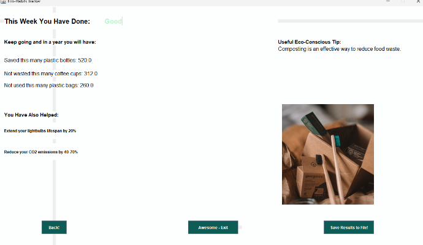

My Projects
Networking - Office Setup
Designed and configured a small-scale LAN using Cisco Packet Tracer, including floor plans, cabling, and a dedicated server room. Set up DHCP, optimized router placement for wireless coverage, and secured 12 virtual machines for successful interconnectivity, enhancing understanding of network architecture, device configuration, and security principles.
Important Knowledge: Cisco Packet Tracer, DHCP Server Setup, Network design / Configuration & Endpoint Security
 View on GitHub
View on GitHub
Eco Habits Tracker
Developed a Java desktop application with Swing to help users track and improve eco-conscious habits. The app calculates a weekly eco-score based on user input, provides performance feedback, and saves results to a text file for future reference. This project strengthened my skills in GUI design, file handling, and input validation
Immportant Knowledge: Java, Java Swing, Software Testing & Debugging, File handling
 View on GitHubBitwise Operations and Conversions
Designed a versatile program for converting data between strings, decimals, binary, hexadecimal, and ASCII formats. Integrated bitwise logic operations to analyze binary input and perform advanced queries. This project enhanced my understanding of data representation, low-level operations, and logic-based problem solving.
Important Knowledge: Java, Java Swing, Bitwise Operations, Data Handling
 View on GitHub
View on GitHub